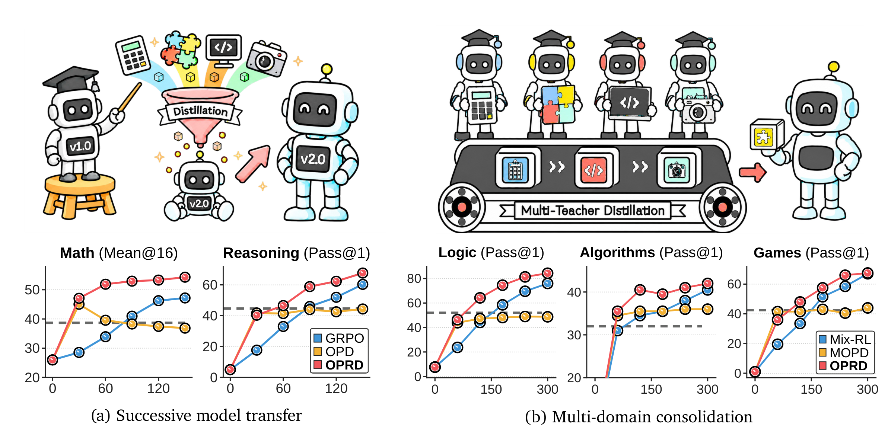
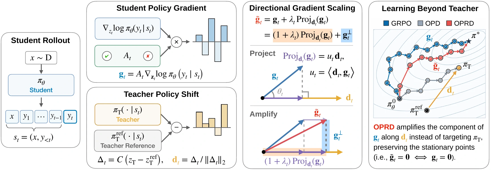
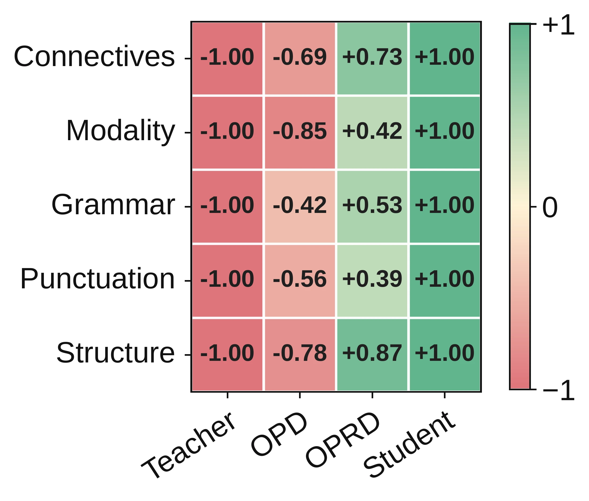

Eliciting Weak-to-Strong Generalization
with On-Policy Reverse Distillation
1 KAIST AI2 Microsoft3 University of Toronto4 Mila5 Université de Montréal6 CIFAR AI Chair
* Equal Contribution · † Project Lead
Research Motivation
Can a weaker, post-trained model accelerate a stronger student’s learning while allowing the student to surpass its teacher?

Successive model transfer. Reuse a smaller model’s post-training gains to help train a more capable successor. Single-teacher experiments ↓
Multi-domain consolidation. Combine smaller specialists into one stronger student, using the matching teacher for each task. Multi-teacher experiment ↓
Abstract
Weak-to-strong generalization asks whether stronger models can learn from weaker supervisors and surpass them. This question is particularly important for successive model generations and multi-domain consolidation, where repeating frontier-scale post-training from scratch can be prohibitively expensive. Yet conventional distillation treats the weak teacher as an optimization target, potentially imposing its capacity ceiling on the student. We introduce On-Policy Reverse Distillation (OPRD), which evaluates the teacher’s policy shift relative to its reference policy on student rollouts and amplifies the component of the student’s verifier-driven policy gradient along that direction. By rescaling only verifier-supported updates, OPRD preserves the stationary points of policy optimization while accelerating learning beyond the teacher. Our evaluations cover mathematical reasoning, logical reasoning, code generation, and visual tool use. In both successive model transfer and multi-teacher distillation, OPRD achieves higher performance with fewer student updates than existing RL and distillation approaches. Stylistically, OPRD students remain closer to models trained with verifier-based RL alone than to their weak teachers, suggesting that teacher guidance accelerates rather than redirects the students’ own optimization. Results in conventional strong-to-weak distillation further demonstrate that OPRD effectively combines verifier-driven policy optimization with teacher guidance regardless of capacity ordering.
Method
Instead of treating the weak teacher as a target to match, OPRD uses what it learned to amplify the student’s verifier-driven policy gradient.

Transfer the teacher’s learning. The centered difference between the teacher and reference logits isolates the change acquired during post-training. OPRD uses its unit direction d.
Preserve the student’s objective. Scale the gradient component along d, leaving the orthogonal component unchanged. Verifier-supported departures from the teacher are gradually amplified as training progresses.
For nonnegative scaling, the transformation preserves stationary points in token-level logit space for a fixed response and adds a nonnegative first-order alignment gain.
Explore the gradient scaling interactively
The student’s gradient stays in charge.
OPRD amplifies the part of the verifier-driven gradient that lies along the teacher’s policy-shift direction. If the student’s update opposes that direction, the correction reinforces that verifier-supported departure.
d: unit teacher-shift direction · g: student policy gradient
Explore the local geometry. During training, OPRD gradually warms up the negative-alignment branch.
Teacher-aligned progress is amplified by 1.5×. The orthogonal component is unchanged.
Experimental Results
We first test transfer from one weak teacher to a stronger successor, then consolidate several specialists into one student. A final experiment reverses the capacity ordering.
How to read the results. Tables report five-checkpoint averages for trained policies to reflect both learning speed and performance during training, rather than final-checkpoint scores. Curves show individual checkpoints. Teacher and initial-student scores use fixed checkpoints; metrics and update intervals are specified with each result.
Comparison methods and training setup
- GRPO / Mix-RL
- Verifier-only reinforcement learning. Mix-RL trains one student on a mixture of tasks.
- OPD / MOPD
- Match the frozen teacher’s policy on student-generated prefixes. MOPD selects the specialist for each task.
- KDRL
- Combine verifier-based learning with on-policy teacher matching.
- OPRD
- Use the teacher’s post-training policy shift to rescale the student’s verifier-driven gradient.
Within each experiment, methods share the initial student checkpoint, prompts, batch size, rollout budget, and number of policy updates. Teacher-based methods use the same frozen teacher for each task. Equal update budgets do not imply equal compute costs.
Experiment 01 · Successive model transfer
A weak teacher accelerates a stronger successor
We test whether a task-trained smaller model can speed up a larger student’s learning and allow it to improve beyond the teacher.
Setup. One fixed teacher guides each student run: Qwen3 4B → 8B for math and reasoning, Qwen3-Base 8B → 14B for code, and Qwen2.5-VL 3B → 7B for visual tool use. The Reasoning Gym runs train a separate student for each task.
Finding. OPRD achieves the highest checkpoint-average score among the compared training methods in all four domains. The math and reasoning curves show early acceleration followed by continued improvement beyond the weak teacher.
Learning dynamics: math and reasoning
Qwen3 · 4B → 8B
OPD improves quickly but plateaus near the teacher average, while GRPO learns more gradually. OPRD combines early transfer with continued improvement. Dashed lines mark teacher scores; markers show measured checkpoints.
View math and reasoning checkpoint values
Checkpoint-average performance across four domains
OPRD checkpoint average
Mathematical reasoning
Teacher and initial-student rows use fixed checkpoints. Trained rows average evaluations at updates 30, 60, 90, 120, and 150. Bold marks the best trained-policy score, matching the paper.
Experiment 02 · Multi-teacher consolidation
Four specialists improve one shared student
We next test whether one student can benefit from several weak teachers while learning their tasks together.
Setup. Four Qwen3-4B-Base specialists guide a single Qwen3-8B-Base student on four Reasoning Gym tasks: Knights & Knaves, Quantum Lock, String Manipulation, and Countdown. Batches mix the tasks equally, with the matching teacher assigned to each example, over 300 updates.
Finding. OPRD reaches 58.77% checkpoint-average Pass@1: 11.09 percentage points above Mix-RL and 14.12 points above the specialist average. It also exceeds the corresponding specialist on each of the four tasks.
Learning dynamics across the task groups
4 × 4B → 1 × 8B
Logic averages Knights & Knaves and Quantum Lock; Algorithms is String Manipulation; Games is Countdown. Dashed lines indicate the corresponding specialist teachers. Markers show measured checkpoints; lines connect those observations.
Reported trained-policy scores average Pass@1 at updates 60, 120, 180, 240, and 300, with equal weight for each of the four tasks. Mix-RL, MOPD, and KDRL are the verifier-only, teacher-matching, and hybrid baselines, respectively.
Experiment 03 · Reversing the capacity ordering
The same mechanism also helps a smaller student
We finally test whether OPRD remains useful in conventional strong-to-weak distillation.
Setup. A Qwen3-8B teacher guides a Qwen3-1.7B student on AIME’24. A Qwen3-8B-Base teacher guides a Qwen3-0.6B student on Knights & Knaves.
Finding. OPRD outperforms all three training baselines on both benchmarks, suggesting that its benefit is not limited to a larger student learning from a smaller teacher.
| Policy | AIME’24 8B → 1.7B · Mean@16 | Knights & Knaves 8B-Base → 0.6B · Pass@1 |
|---|---|---|
| Teacher | 52.29 | 64.50 |
| Student | 10.00 | 5.00 |
| GRPO | 18.92 | 20.60 |
| OPD | 29.79 | 20.20 |
| KDRL | 25.33 | 33.70 |
| OPRD | 33.58 | 49.40 |
Scores are percentages. Trained-policy rows average five checkpoints; teacher and initial-student rows use fixed checkpoints. Bold marks the best trained policy in each column. The two benchmarks use different metrics.
Student Behavior under Teacher Guidance
The performance results show that teacher guidance can accelerate learning. We also examine whether the student adopts the weak teacher’s response style.
Closer to the verifier-trained student
On AIME’24, we compare 101 response-style features grouped into five categories. At update 150, OPRD is closer to the GRPO student in all five categories, while OPD is closer to the weak teacher.
Reading the figure. Positive values indicate a style closer to the GRPO student; negative values indicate a style closer to the teacher. “Student” denotes the GRPO student at update 150.
This pattern is consistent with OPRD guiding the student’s own optimization without requiring it to imitate the teacher’s response style. The figure measures style similarity, not reasoning correctness.

The paper also examines broader weak-to-strong baselines, guidance direction and strength, and failure cases when verifier gradients vanish. Read the full analysis in the paper →
BibTeX
If you find this work useful, please consider citing our paper.
@article{park2026eliciting,
title={Eliciting weak-to-strong generalization with on-policy reverse distillation},
author={Park, Youngrok and Bae, Sangmin and Jung, Hojung and Ko, Jongwoo and Choi, Yunseon and Kim, Young Jin and Cameron, Pashmina and Courville, Aaron and Yun, Se-Young},
journal={arXiv preprint arXiv:2609.08798},
year={2026}
}Citation for arXiv:2609.08798.